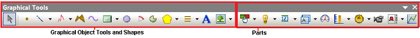
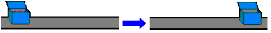
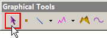
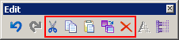
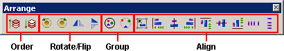

|
|
|
|
|
|
|
|
Vijeo-Designer Editor uses two types of graphical objects—drawing tools and parts. Vijeo-Designer's Toolchest is a library of ready-to-use images of factory machinery and other hardware parts.
For details, see Section 21.2, Using the Toolchest to Store and Reuse Common Objects.
This section describes the graphical objects that you can place on a panel and use individually or in combination with other objects to create and edit a visual representation of your design.
The Graphical Objects toolbar comprises two types of drawing tools:
Basic graphical object tools and shapes.
For details, see Section 7.2, Drawing Graphical Objects.
Objects that convey information—the Switch, Lamp, Data Display, Trend Graph, and Alarm Summary objects. Details about each object can be found in its corresponding section.

Vijeo-Designer's basic drawing tools consist of:
Select tool—Vijeo-Designer's main editing tool—for selecting graphical objects.
Basic Shapes—the Dot, Line, Rectangle, Ellipse, Arc, Pie, Polyline, Polygon, Symmetric Polygon, Bezier Curve, and Scale tools—for designing, drawing, and manipulating your project's architecture. Each shape is described in this section on Drawing Graphical Objects.
Text Object tool—for designing textual labels and messages.
Image Object tool—for importing and pasting images from external sources onto the graphical panel.
The basic graphical objects can be combined in a variety of ways to create designs that represent production lines, conveyor belts, and other types of machinery processes, such as the following.
You can also set up animation with your graphical objects to create movement of the objects.
For details about setting up animation, see Chapter 8, Animating Graphics.

After displaying graphical objects and creating designs on the panel, you can use various methods of editing to select, move, and manipulate these objects.
See Section 7.4, Editing Graphical Objects, for details about Vijeo-Designer's graphical object editing tools, which include:
Select tool—the pointer arrow tool included in the Graphical Objects toolbar—for selecting graphical objects.

Select Options tools—Select All, Select Type, Select Individual, Select Previous, Select Next—for refining selections of objects.


Arrange tools
Order—Bring To Front, Send To Back
Rotate/Flip—Rotate Left, Rotate Right, Flip Horizontal, Flip Vertical
Group—Group, Ungroup
Align—Align to Grid, Align Left, Align Centre, Align Right, Align Top, Align Middle, Align Bottom, Align Space Horizontal, Align Space Vertical
